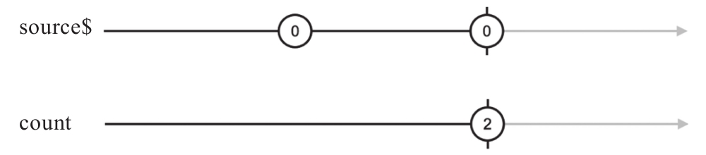

count的作用是统计上游Observable对象吐出的所有数据个数。比如下面的代码中，count的上游的就是of和concat产生的Observable对象：
import {Observable} from 'rxjs/Observable';
import 'rxjs/add/observable/of';
import 'rxjs/add/operator/concat';
import 'rxjs/add/operator/count';
const source$= Observable.of(1, 2, 3).concat(Observable.of(4, 5, 6));
const count$ = source$.count();
其中，count$会吐出一个，也是唯一的一个数据6，因为source$通过concat组合而成的数据流里总共有6个数据。
如果修改source$的代码如下：
const source$= Observable.timer(1000).concat(Observable.timer(1000)); const count$ = source$.count();
那么count$产生的数据就是2，值得注意的是count$只有在2秒钟之后才产生这个数据2，因为timer延迟了source$的完结时间。
count的弹珠图如图6-1所示。

图6-1 count的弹珠图
要想统计一个Observable对象中产生的所有数据个数，只能等到它结束，非常合理。